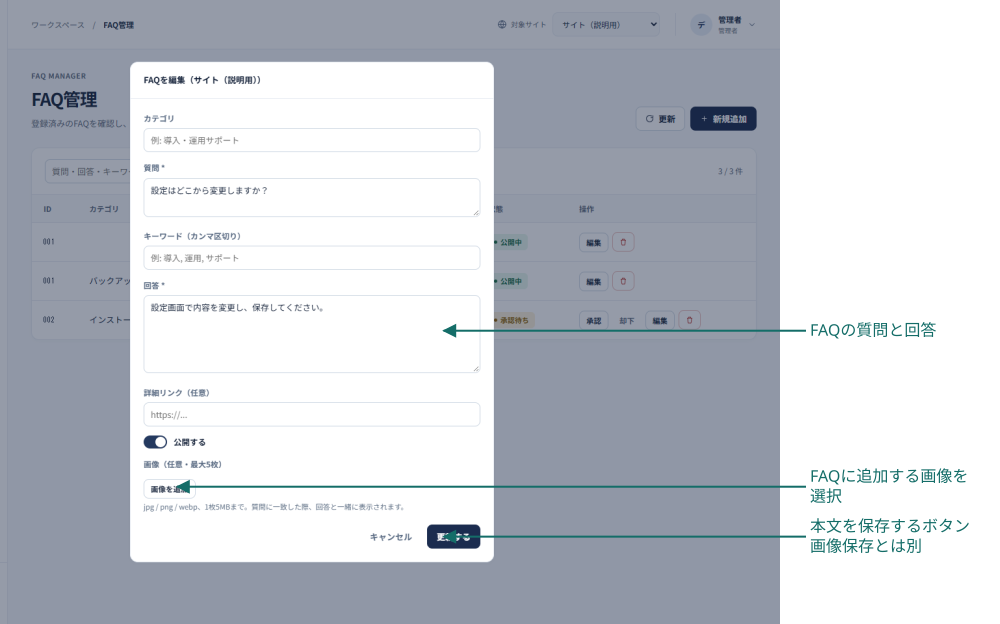

条件
FAQを先に保存してください。1FAQにつき5枚、1枚5,242,880バイト（約5.24 MB）まで。JPEG・PNG・WebPを使用します。
保存済みFAQに画像を追加
FAQ管理 → 編集 → 画像を追加 → JPEG・PNG・WebPを選択 → 画像を保存。

1FAQにつき5枚、1枚5 MBまで。画像の追加・削除はすぐに反映され、キャンセルでは取り消せません。スタッフが画像を変更すると承認待ちになります。却下中のFAQの画像は変更できません。
画像の削除
- FAQの編集画面を開きます。
- 削除する画像の削除ボタンを押します。
- 確認画面が出たら確定し、画像が削除されたことを確認します。
画像はFAQに付けます。WordやPDF内の画像がAIの回答へ自動で添付されることはありません。